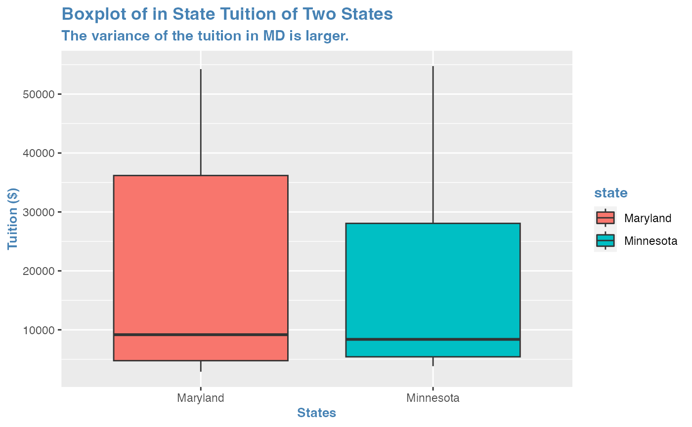
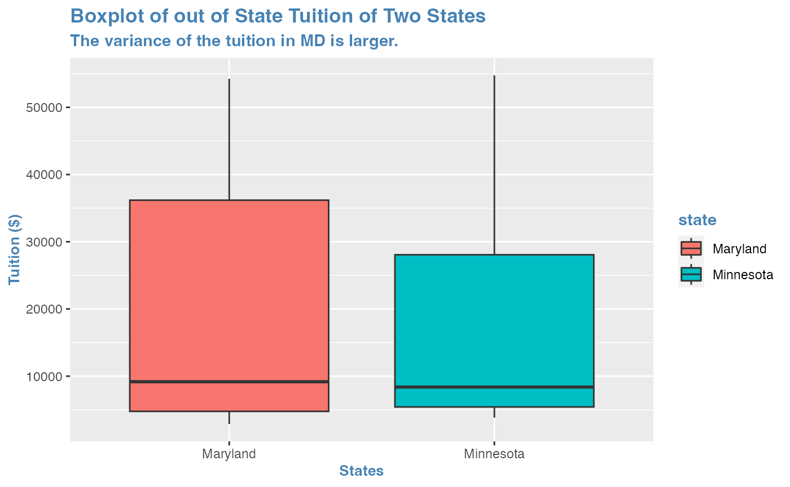
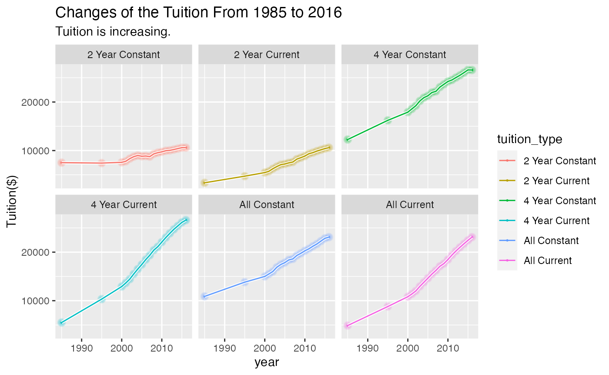

Example Analysis
Zhichen Xiong (Ella)
2022-12-11
Source:vignettes/ExampleAnalysis.Rmd
ExampleAnalysis.RmdPurpose of Analysis
I used to study in University of Minnesota, a public university in MN for undergraduate. And right now, I study in Johns Hopkins a private university in MD for graduate. The tuition I paid is very different, so I want to explore the differences of tuition in these two states.
Data Source
The data I choose from tidytuesday is about the tuition in United States.You can click here to download the raw data set.
Also I use the data set about the historical changes of the tuition in the U.S.
Download data into your PC
if(!dir.exists(here("data"))) { dir.create(here("data")) }
# saves data only once (not each time you knit a R Markdown)
if(!file.exists(here("data","chocolate.RDS"))) {
url_csv1 <- 'https://raw.githubusercontent.com/rfordatascience/tidytuesday/master/data/2020/2020-03-10/tuition_cost.csv'
tuition_cost <- readr::read_csv(url_csv1)
url_csv2 <- 'https://raw.githubusercontent.com/rfordatascience/tidytuesday/master/data/2020/2020-03-10/historical_tuition.csv'
historical_tuition <- readr::read_csv(url_csv2)
# save the file to RDS objects
saveRDS(tuition_cost, file= here("data","tuition_cost.RDS"))
saveRDS(historical_tuition, file= here("data","historical_tuition.RDS"))
}Load Data
tuition_cost <- readRDS(here("data","tuition_cost.RDS"))
historical_tuition <- readRDS(here("data","historical_tuition.RDS"))
head(tuition_cost)## # A tibble: 6 × 10
## name state state…¹ type degre…² room_…³ in_st…⁴ in_st…⁵ out_o…⁶ out_o…⁷
## <chr> <chr> <chr> <chr> <chr> <dbl> <dbl> <dbl> <dbl> <dbl>
## 1 Aaniiih N… Mont… MT Publ… 2 Year NA 2380 2380 2380 2380
## 2 Abilene C… Texas TX Priv… 4 Year 10350 34850 45200 34850 45200
## 3 Abraham B… Geor… GA Publ… 2 Year 8474 4128 12602 12550 21024
## 4 Academy C… Minn… MN For … 2 Year NA 17661 17661 17661 17661
## 5 Academy o… Cali… CA For … 4 Year 16648 27810 44458 27810 44458
## 6 Adams Sta… Colo… CO Publ… 4 Year 8782 9440 18222 20456 29238
## # … with abbreviated variable names ¹state_code, ²degree_length,
## # ³room_and_board, ⁴in_state_tuition, ⁵in_state_total, ⁶out_of_state_tuition,
## # ⁷out_of_state_total
head(historical_tuition)## # A tibble: 6 × 4
## type year tuition_type tuition_cost
## <chr> <chr> <chr> <dbl>
## 1 All Institutions 1985-86 All Constant 10893
## 2 All Institutions 1985-86 4 Year Constant 12274
## 3 All Institutions 1985-86 2 Year Constant 7508
## 4 All Institutions 1985-86 All Current 4885
## 5 All Institutions 1985-86 4 Year Current 5504
## 6 All Institutions 1985-86 2 Year Current 3367Data wrangling and data visualization
tuition_two = tuition_cost %>% filter(state == "Minnesota" | state == "Maryland") %>%
filter(type == "Public"| type == "Private")
head(tuition_two)## # A tibble: 6 × 10
## name state state…¹ type degre…² room_…³ in_st…⁴ in_st…⁵ out_o…⁶ out_o…⁷
## <chr> <chr> <chr> <chr> <chr> <dbl> <dbl> <dbl> <dbl> <dbl>
## 1 Alexandri… Minn… MN Publ… 2 Year NA 5416 5416 5416 5416
## 2 Allegany … Mary… MD Publ… 2 Year NA 4140 4140 9210 9210
## 3 Anne Arun… Mary… MD Publ… 2 Year NA 4110 4110 12180 12180
## 4 Anoka Tec… Minn… MN Publ… 2 Year NA 5584 5584 5584 5584
## 5 Anoka-Ram… Minn… MN Publ… 2 Year NA 5073 5073 5073 5073
## 6 Augsburg … Minn… MN Priv… 4 Year 10280 38800 49080 38800 49080
## # … with abbreviated variable names ¹state_code, ²degree_length,
## # ³room_and_board, ⁴in_state_tuition, ⁵in_state_total, ⁶out_of_state_tuition,
## # ⁷out_of_state_total
tuition_two %>% group_by(state_code, type, degree_length) %>%
summarise(average_in_state = mean(in_state_tuition), average_out_of_state = mean(out_of_state_tuition)) %>%
mutate(diff = average_out_of_state - average_in_state)## `summarise()` has grouped output by 'state_code', 'type'. You can override
## using the `.groups` argument.## # A tibble: 7 × 6
## # Groups: state_code, type [4]
## state_code type degree_length average_in_state average_out_of_state diff
## <chr> <chr> <chr> <dbl> <dbl> <dbl>
## 1 MD Private 4 Year 38484. 38484. 0
## 2 MD Public 2 Year 4404. 9978. 5574.
## 3 MD Public 4 Year 9583. 23031. 13448.
## 4 MN Private 2 Year 3830 3830 0
## 5 MN Private 4 Year 35465. 35465. 0
## 6 MN Public 2 Year 5437. 5773. 336.
## 7 MN Public 4 Year 10579. 15541. 4962.
tuition_cost %>% filter(state == "Minnesota"| state == "Maryland") %>%
filter(type == "Public"| type == "Private") %>%
ggplot(aes(x = state, y = in_state_tuition, fill = state)) + geom_boxplot() +
labs(title = "Boxplot of in State Tuition of Two States",
subtitle = "The variance of the tuition in MD is larger.",
x = "States", y = "Tuition ($)") +
theme(title = element_text(color="steelblue",hjust=0.2,lineheight=0.2,face="bold"),
axis.title.x=element_text(size=10, hjust=0.5),
axis.title.y=element_text(size=10, hjust=0.5))
MD_in_state = tuition_two %>% filter(state == "Maryland") %>% select(in_state_tuition)
MN_in_state = tuition_two %>% filter(state == "Minnesota") %>% select(in_state_tuition)
paste0("The average in state tuition in MD is $",map(.x = c(MD_in_state, MN_in_state), .f = function(x) mean(x))[1], ".")## [1] "The average in state tuition in MD is $18017.6222222222."
paste0("The average in state tuition in MN is $",map(.x = c(MD_in_state, MN_in_state), .f = function(x) mean(x))[2], ".")## [1] "The average in state tuition in MN is $16918.6323529412."
tuition_cost %>% filter(state == "Minnesota"| state == "Maryland") %>%
filter(type == "Public"| type == "Private") %>%
ggplot(aes(x = state, y = in_state_tuition, fill = state)) + geom_boxplot() +
labs(title = "Boxplot of out of State Tuition of Two States",
subtitle = "The variance of the tuition in MD is larger.",
x = "States", y = "Tuition ($)") +
theme(title = element_text(color="steelblue",hjust=0.2,lineheight=0.2,face="bold"),
axis.title.x=element_text(size=10, hjust=0.5),
axis.title.y=element_text(size=10, hjust=0.5))
MD_out_state = tuition_two %>% filter(state == "Maryland") %>% select(out_of_state_tuition)
MN_out_state = tuition_two %>% filter(state == "Minnesota") %>% select(out_of_state_tuition)
paste0("The average out of state tuition in MD is $", map(.x = c(MD_out_state, MN_out_state), .f = function(x) mean(x))[1])## [1] "The average out of state tuition in MD is $23884.3111111111"
paste0("The average out of state tuition in MN is $", map(.x = c(MD_out_state, MN_out_state), .f = function(x) mean(x))[2])## [1] "The average out of state tuition in MN is $17947.5735294118"
char_num = function(string){
sub = substr(string, 0,4)
num = as.numeric(sub)
return(num)
}
historical_tuition["year"] = map_dbl(historical_tuition$year, char_num)
historical_tuition %>%
filter(type == "All Institutions") %>%
ggplot(aes(x = year, y = tuition_cost, color = tuition_type)) +
geom_glowpoint() + geom_shadowline() + facet_wrap(vars(tuition_type)) +
labs(title = "Changes of the Tuition From 1985 to 2016",
subtitle = "Tuition is increasing. ",
y = "Tuition($)")
From the two side by side box plot and all the summarized data, we can see that the average tuition of two states are different (MD’s is a little bigger than MN’s). Also, we can see that the 75% quantile of MD is higher than that of MN. And when we go back to the mean amount of tuition in the table posted earlier, we can see that no matter what kind of tuition, in state or out of state, MD is higher than MN.
These are the functions I used:
| ggplot2 | purrr | dplyr/tidyr | stringr | ggshadow |
|---|---|---|---|---|
| ggplot(), geom_boxplot(), geom_glowpoint(), geom_shadowline() | map_dbl(), map() | filter(), select(),group_by(), summarise(), mutate() | substr() | geom_shadowline(), geom_glowpoint() |